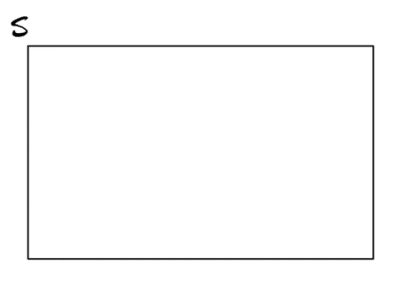
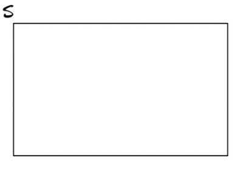
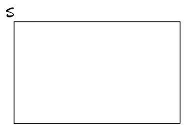
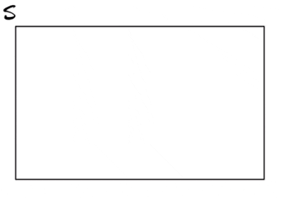
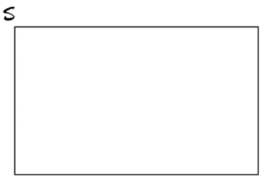

1 Basics of sets
$$
$$
We begin our discussion of sets by defining the notion of a statistical experiment along with its corresponding sample space.
Definition 1.1 (Statistical experiment and sample space) A statistical experiment is a process which generates a single outcome, where:
- There is more than one possible outcome.
- It is known what the possible outcomes are.
- It is not known which outcome will be generated.
The sample space \(S\) is the set of all possible outcomes.
We may refer to each possible outcome in a statistical experiment as a sample point. We may also call a statistical experiment simply an experiment.
Example 1.1 (Rolling a die) Rolling a die is a statistical experiment. The sample space is \[ S = \left\{ 1,2,3,4,5,6 \right\}. \]
A set is a collection of elements or members. If we can list or begin to list the elements of a set, we put them inside curly braces \(\{\dots \}\) and separate them with commas, as above.
Example 1.2 (Skipping a stone) Skipping a stone and counting the number of skips is a statistical experiment with the sample space \[ S = \{0,1,2,3,\dots\}. \]
In skipping a stone, one might observe zero skips (the stone plunges under at first contact with the water) or a positive whole number of skips. The ellipsis “\(\dots\)” indicates that one could observe any whole number of skips. This may seem unrealistic, as one is unlikely to observe numbers of skips exceeding, say, \(10\) or so, but setting a finite maximum number of possible skips may be naïve. Thus in experiments in which the outcome is a count with no clear maximum possible count, the sample space \(S = \{0,1,2,3,\dots\}\) is often assumed.
Example 1.3 (Spinning a top) Spinning a top and recording how long it spins is a statistical experiment with the sample space \[ S = [0,\infty). \]
For this experiment the sample space is not a list or the beginning of a list but rather an interval on the real number line. We cannot list (or begin to list) the possible values, because between any two real numbers another real number may be found. So we express the possible outcomes if this experiment as an interval.
One may wax philosophical discussing whether or not \(0\) should be included in the sample space for spinning a top: if the top falls “right away”, we could regard this as having happened before any time has passed or after the passage of some infinitesimally small amount time. It is not so important. One might also wonder why \(\infty\) is given as the upper limit of the sample space, since every top ever spun throughout history has stopped spinning within a finite period of time (or could there be one spinning at this moment that will never stop?); however, it may not be clear what the upper bound should be (are we measuring time in seconds, milliseconds, microseconds?), and if we set a finite upper bound, we may end up observing an experimental result exceeding the bound (the chagrin!). For this reason, in experiments in which the outcome is a time duration, one often assumes that the sample space is \(S = [0,\infty)\).
Example 1.4 (Flipping a coin) Flipping a coin is a statistical experiment with the sample space \[ S = \{\text{heads}, \text{tails}\}. \]
Have we said that the sample space must consist of numbers? Indeed, no! The elements in a sample space are simply the possible outcomes of a statistical experiment, which may not be numbers.
Example 1.5 (Rolling two dice) Rolling two dice and recording the rolls is a statistical experiment. Writing each possible outcome in the format \((\text{roll 1}, \text{roll 2})\), the sample space is \[ S = \left\{ \begin{array}{cccccc} (1,1), & (1,2), & (1,3), & (1,4), & (1,5), & (1,6), \\ (2,1), & (2,2), & (2,3), & (2,4), & (2,5), & (2,6), \\ (3,1), & (3,2), & (3,3), & (3,4), & (3,5), & (3,6), \\ (4,1), & (4,2), & (4,3), & (4,4), & (4,5), & (4,6), \\ (5,1), & (5,2), & (5,3), & (5,4), & (5,5), & (5,6), \\ (6,1), & (6,2), & (6,3), & (6,4), & (6,5), & (6,6) \end{array} \right\}. \]
We would like to be able to discuss the relative likelihoods of different outcomes of a statistical experiment—some outcomes being more likely than others, or some collections of outcomes being more likely than other collections of outcomes. To this end we define an event:
Definition 1.2 (Event) An event is a set of outcomes belonging to the sample space of an experiment.
In other words, an event is any subset of the sample space \(S\). Often an event can be described in words: In the experiment of rolling two dice, observing rolls of which the sum is greater than \(10\) corresponds to the set of outcomes \(\{(6,5), (5,6), (6,6)\}\). In the experiment of checking the miles per gallon driven on a tank of gas, the event of getting at least \(40\) miles to the gallon corresponds to the set \([40,\infty)\).
We often denote events by capital letters like \(A\), \(B\), and \(C\).
In the experiment of rolling two dice, one could denote by \(A\) the event of rolling doubles. Then \(A\) is identified as \[ A = \{(1,1), (2,2), (3,3), (4,4), (5,5), (6,6)\}, \] which is a subset of the sample space \(S\) for the experiment of rolling two dice.
Definition 1.3 (Containment) For events \(A\) and \(B\), we say that \(A\) is contained in \(B\) if every point in \(A\) is in \(B\). We write \(A \subset B\). It means the same thing if we say that \(A\) is a subset of \(B\).
The events of interest in a statistical experiment are all contained in the sample space \(S\). In the experiment of rolling two dice denote the event of rolling sixes by \(B = \{(6,6)\}\) and the event of obtaining rolls of which the sum is ten or more by \(C = \{(6,4), (5,5), (4,6), (6,5), (5,6), (6,6)\}\). Then we have \(B \subset C\).
Definition 1.4 (Equality of sets) We write \(A = B\) if \(A \subset B\) and \(B \subset A\). That two sets are equal if they contain one another.
The notation \(s \in A\) means \(s\) is a member of the set \(A\), where in the context of a statistical experiment, \(s\) denotes a particular outcome in the sample space \(S\). If one had to show that \(A \subset B\), one could do this by showing \(s \in A\) implies \(s \in B\). That is, one could show that if a sample point is in \(A\) then it is also in \(B\).
We next define the complement of an event, which, informally speaking, is the event that an event does not occur:
Definition 1.5 (Complement) The complement \(A^c\) of the event \(A\) is the set of all points in \(S\) which are not in \(A\). We may write \[ A^c = S\setminus A, \] where \(S\setminus A\) denotes the set of all points in \(S\) which are not in \(A\).

In the experiment of rolling two dice, if \(A\) is the event of rolling doubles, then the complement of \(A\) is the event \[ A^c = \left\{ \begin{array}{cccccc} & (1,2), & (1,3), & (1,4), & (1,5), & (1,6), \\ (2,1), & & (2,3), & (2,4), & (2,5), & (2,6), \\ (3,1), & (3,2), & & (3,4), & (3,5), & (3,6), \\ (4,1), & (4,2), & (4,3), & & (4,5), & (4,6), \\ (5,1), & (5,2), & (5,3), & (5,4), & & (5,6), \\ (6,1), & (6,2), & (6,3), & (6,4), & (6,5) & \end{array} \right\}. \]
In the experiment of flipping a coin, the complement of the event \(H = \{\text{heads}\}\) does not include such absurdities as “an elephant walks into the room,” because this is not an outcome in the sample space; the complement is rather \[ H^c =\{\text{heads}, \text{tails}\}\setminus \{\text{heads}\} = \{\text{tails}\}. \] So the sample space \(S\) of the experiment will represent the entire universe of possibilities.
Two set operations that we use very often to make new sets are the union and the intersection.
Definition 1.6 (Union and intersection of sets) For any sets \(A\) and \(B\):
- The union of \(A\) and \(B\), denoted by \(A \cup B\), is the set of points in \(A\) or \(B\) or in both \(A\) and \(B\).
- The intersection of \(A\) and \(B\), denoted by \(A \cap B\), is the set of points in both \(A\) and \(B\).
It can be helpful to depict set operations with Venn diagrams.


In the experiment of rolling two dice, define \[ \begin{align*} O &= \text{At least one roll is odd}\\ E &= \text{At least one roll is even} \end{align*} \] Then \[ \begin{align*} O \cup E &= S \\ O \cap E &= \left\{ \begin{array}{cccccc} & (1,2) & & (1,4) & & (1,6) \\ (2,1), & & (2,3), & & (2,5), & \\ & (3,2), & & (3,4), & & (3,6) \\ (4,1), & & (4,3), & & (4,5) & \\ & (5,2), & & (5,4), & & (5,6), \\ (6,1), & & (6,3), & & (6,5) & \end{array} \right\}. \end{align*} \]
We next define mutual exclusivity as well as a set called the empty set.
Definition 1.7 (Mutual exclusivity and the empty set) Events \(A\) and \(B\) are called mutually exclusive or disjoint if \[ A \cap B = \emptyset, \] where \(\emptyset\) is called the empty set, which is the set having no points.

In the exeriment of rolling two dice, the event that the sum of the rolls is \(7\), \(R = \{(1,6), (2,5), (3,4), (4,3),(5,2),(6,1)\}\), and the event that the sum of the rolls is \(2\), \(D = \{(1,1)\}\), are mutually exclusive, as \(R \cap D = \emptyset\).
The following results can be very handy. They are called De Morgan’s laws.
Theorem 1.1 (DeMorgan’s Laws) For any events \(A\) and \(B\) we have \[ (A \cup B)^c = A^c \cap B^c \quad \text{ and } \quad (A \cap B)^c = A^c \cup B^c. \]
Exercise 1.1 (Birthday cake or ice cream) Let \(C\) be the event that ice cream is served at a birthday party and \(I\) the event that cake is served. Interpret the following events, making use of DeMorgan’s Laws:
- \((C \cap I)^c\)
- \((C \cup I)^c\)
In the above the sample space, that is the entire universe of possibilities, is not explicitly stated. The experiment is apparently seeing what desserts are served at a birthday party, and the sample space is something like \(S = \{\text{all possible desserts}\}\).
Before finishing up our introduction to sets, will define a partition, which is a collection of non-overlapping sets such that the union of all the sets is equal to the entire sample space.
Definition 1.8 (Partition)
- Events \(A_1,A_2,\dots\) are called pairwise disjoint if \(A_i \cap A_j = \emptyset\) for all \(i \neq j\).
- If \(A_1,A_2,\dots\) are pairwise disjoint events in \(S\) and \(A_1 \cup A_2 \cup \dots = S\) then the collection \(A_1,A_2,\dots\) is called a partition of \(S\).
Note that the two events \(A\) and \(A^c\) make up a partition of \(S\). For a collection of sets, the terms “pairwise disjoint” and “mutually exclusive” can be used interchangeably.
